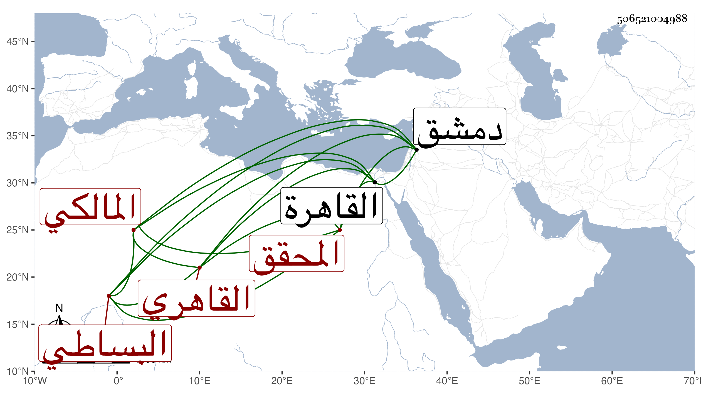

0902Sakhawi.DawLamic.ITO20230111-ara1.EIS1600.506521004988
Biography ID: 506521004988
298
محمد بن يوسف بن خلد بن نعيم ككبير ابن مقدم بن محمد بن حسن ابن غانم بن علي العز أبو الطاهر بن الجمال البساطي ثم القاهري المالكي المحقق نسبه في الشمس محمد بن أحمد بن عثمان والآتي أبوه . ولد في مستهل شوال سنة اثنتين وتسعين وسبعمائة بالقاهرة ونشأ بها فحفظ القرآن وكتبا عرض بعضها وأخذ عن أبيه والجمال الأقفاصي وغيرهما وسمع على ابن الكويك مشيخة الرازي وغيرها وأجاز له أبوه والجمال الحنبلي والشمس الشامي بل وفي جملة سامعي مسلم عائشة ابنة ابن عبد الهادي وخلق ، وحدث باليسير فأسمع الزين رضوان ولده عليه حديث وحشي من مشيخة الرازي واستقر في تدريس الفقه بالمؤيدية والنظر على القمحية بعد أبيه وكذا استنابه في القضاء حيث ما اجتاز قريبه الشمس البساطي في يوم موت أبيه واستمر ينوب عن من بعده بل عين لقضاء المالكية بدمشق ولبس الخلعة بذلك في سنة سبع وأربعين ثم بطل بعد يومين لكونه لم يكن محمودا ولذا جرحه المناوي في كائنة أبي الخير النحاس وامتحن بإدخال سجن أولى الجرائم ولزم من ذلك توقف الولوي السنباطي في عوده إلى النيابة إلا بعد ثبوت عدالته وتنفيذها على شافعي وأذن السلطان فيها وضمان دركه في المستقبل ففعل ذلك وكان الضامن له البدر بن الرومي النقيب . واستمر مؤخرا حتى مات في أوائل جمادى الأولى سنة أربع وستين بعد أن أجاز عفا الله عنه وإيانا .
